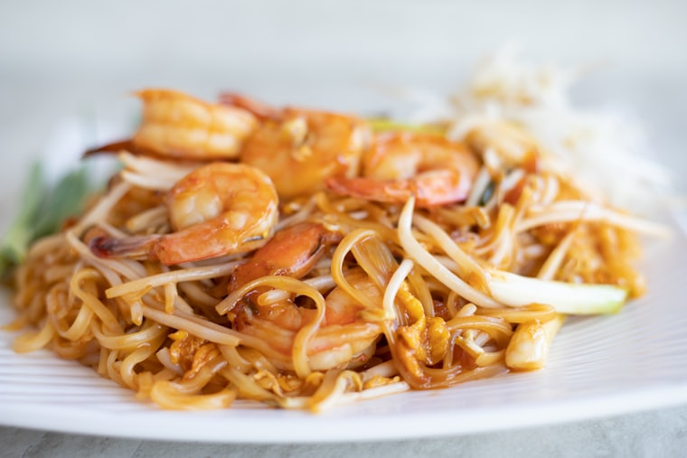
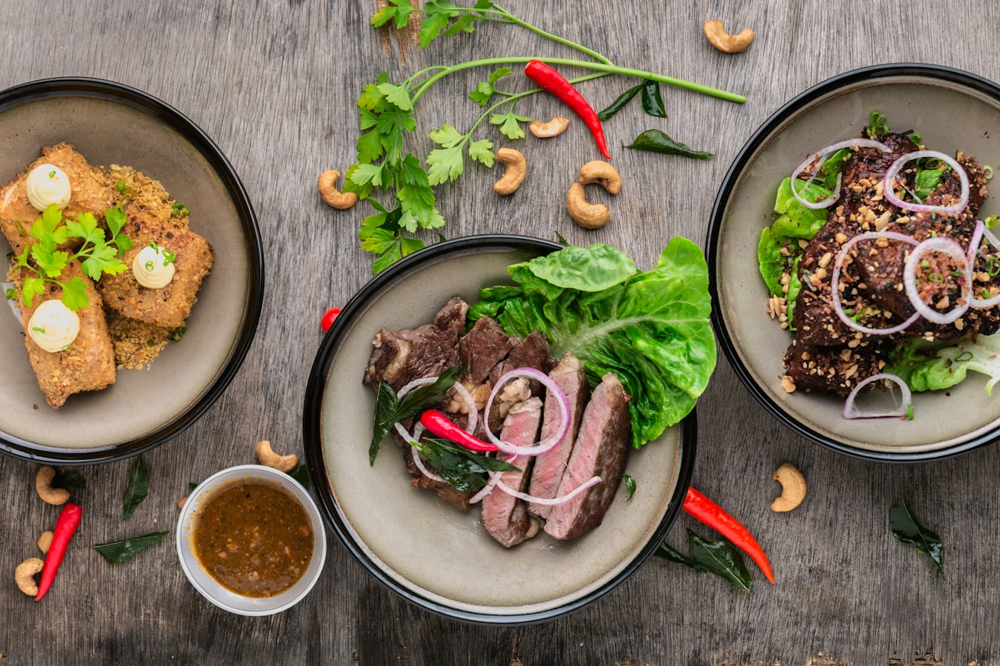

ผัดไทยกุ้งสด
เส้นจันท์ผัดไฟแรง กุ้งแม่น้ำตัวโต
฿180

ครัวเปิดทุกวัน 10:00–22:00 วัตถุดิบซื้อสดจากตลาดทุกเช้า ไม่ใช้ผงชูรส
4.9 จาก 1,240 รีวิว ส่ง GrabFood ที่จอดรถฟรี
ออเดอร์ของคุณ
ไม่ต้องกรอกฟอร์ม ไม่ต้องสมัครอะไร — เลือกเสร็จกดปุ่มเดียวแล้วข้อความออเดอร์จะไปโผล่ในแชทไลน์ให้พร้อมส่ง
ยังไม่ได้เลือกจานไหน — กดปุ่ม “เก็บ” ที่เมนูข้างบนได้เลย เปลี่ยนใจกดออกได้ตลอด
รวมทั้งหมด฿0
ครัวเริ่มทำเมื่อใกล้เวลาที่นัด — บอกเวลามารับตอนส่งข้อความได้เลย
สั่งเป็นชุด
ชุดถูกกว่าสั่งแยกจานประมาณ 15% · สลับเมนูในชุดได้ตามใจ ราคาเท่าเดิมถ้าอยู่ในหมวดเดียวกัน
จัดเลี้ยง · สั่งล่วงหน้า
สั่งล่วงหน้าได้ทั้งแบบมารับเองและจัดโต๊ะให้ที่บ้าน ครัวเดิม คนทำเดิม
10–20 คน
฿180/ ท่าน
20–50 คน
฿220/ ท่าน
50 คนขึ้นไป
คิดตามเมนูที่เลือก
วัตถุดิบ
ร้านที่บอกว่า "สดใหม่ทุกวัน" มีเยอะ — ข้างล่างนี้คือว่าซื้อจากที่ไหน วันไหน และทำอะไรกับมันก่อนขึ้นเตา
เริ่มจากรถเข็นหน้าปากซอย วันนี้มี 42 ที่นั่ง แต่ยังใช้สูตรเดิมและซื้อของเองทุกเช้า
แวะมาหาเรา
ตรงข้ามตลาดเช้าพอดี ถ้ามาถึงตลาดแล้วคือถึงร้านแล้ว
สั่งยังไง
จองโต๊ะ
ร้านมี 14 โต๊ะ (72 ที่นั่ง) โซนในแอร์ 8 โต๊ะ โซนระเบียงริมสวน 6 โต๊ะ — บอกได้ว่าอยากนั่งโซนไหน
ลูกค้าประจำ
★★★★★
สั่งกลับบ้านทุกวันศุกร์ ต้มยำเข้มจริงอย่างที่เขียนไว้ ไม่ใช่เผ็ดอย่างเดียว
★★★★★
พาลูกค้าต่างชาติมากินสองรอบแล้ว เขาชอบที่บอกระดับความเผ็ดได้
★★★★☆
เสาร์-อาทิตย์คนเยอะจริง จองไว้ก่อนดีกว่า แต่ของอร่อยคุ้มที่รอ
คำถามที่พบบ่อย
วันธรรมดาโทรมาก่อน 2 ชั่วโมงก็ทัน เสาร์-อาทิตย์แนะนำจองล่วงหน้า 1 วัน
มีลานจอดหลังร้าน 12 คัน จอดฟรีตลอดเวลาที่นั่งทาน
รับได้ถึง 42 ที่นั่ง จัดชุดโต๊ะจีนได้ แจ้งล่วงหน้า 3 วันเพื่อเตรียมวัตถุดิบ
ได้ทุกจาน บอกตอนสั่งว่าไม่เผ็ด เผ็ดน้อย หรือเผ็ดปกติ เด็กทานได้